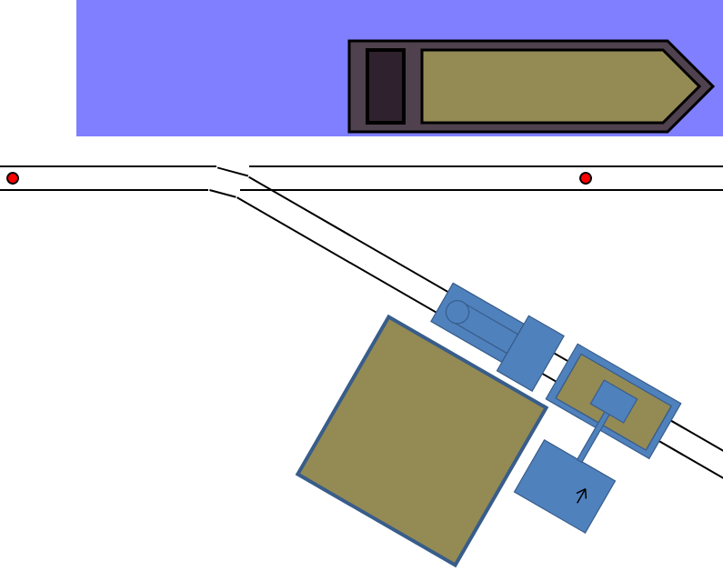
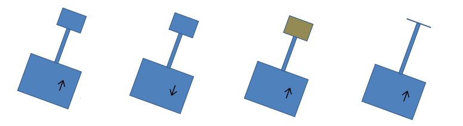
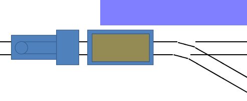

LogixNG Tutorial - Chapter 7This example is a bit complex and needs some introduction on how it works. But it gives a good introduction to the action Sequence which is very useful with LogixNG. This example uses a web page that's included in JMRI. Start PanelPro and open a web browser and visit the page http://localhost:12080/web/logixng_examples/logixng_sequence.html. This link assumes that PanelPro uses the port 12080 for its web server.
 Sequence - controlling a crane and a locoA layout for exhibitions has a coal storage with a coal crane, there the crane loads coal on a wagon which then transports the coal to a harbour and drops the coal into a ship.

 Outside of this image, north of the track is the harbour with the ship that gets loaded with coal. And next to the crane is the coal yard there the crane picks up coal to put in the car. The red circles between the rails are sensors that goes active when the engine or the car is above it.
Running the layoutAt first, we try to run the layout manually to see how it works. And to do that, we need to define some sensors and memories in JMRI. There is some support for AnalogIOs in JMRI, items on the layout that uses numbers instead of on/off states, but it's limited today to meters. Therefore, this demo uses memories to send and receive analog values to and from the layout. But the goal is to use AnalogIO devices instead.We have a turnout on the layout:
Some rules when running this layoutThe crane will not rotate left-right unless the bucket is in its top position. So if the crane doesn't rotate, make sure that the bucket is lifted to its upmost position.The bucket will not be loaded unless the bucket is opened, moved down to the bottom position and then closed. The car will not be loaded unless the bucket of the crane is filled and then opened above the car. Now, lets automate this layout using LogixNG.To run this layout, we need to be able to do one step at a time. Do thing A, wait for condition B, do thing C, wait for condition D, and so on. For this purpose, we can use the action Sequence. It has three predefined expressions: Start, Stop and Reset, and then a set of actions and expressions that follows these three expressions.Sequence executes the first action and then waits for the first expression to return true. Once that happens, Sequence executes the second action and then waits for the second expression to return true. Once that happens, Sequence executes the third action, and so on. Sequence may auto start or be started by the Start expression, depending on how the user has configured Sequence. And when the last expression has returned true, Sequence may start over and run the sequence again, if the user has configured Sequence to do so. For this layout, we use two Sequence. The first runs the train and the second runs the crane. Note that we can have both in the same ConditionalNG. ToDo - add text about how to setup the SequenceFor now, please look at the example in the profile. It has a working ConditionalNG for this.Using the random functionOne problem remains. When we run the automation, the crane will always dig coal from the same spot. It will result in that the coal on that spot runs out, while there is plenty of coal close to that spot. To fix this, we want the crane to pick a random spot within an interval and dig at that random spot. To do this, we use the expression Formula and the function random(). The function random() can take zero arguments and then returns a floating point number between 0 and 1, and it can take two arguments and then returns a floating point number between the first argument and the second argument. We will use the later and give random() two arguments, there the first argument is the minimum value and the second argument is the maximum value. |